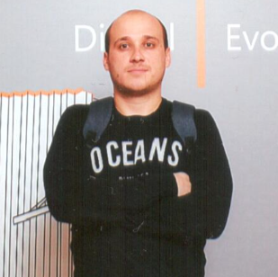

Кравченко Владимир Григорьевич

Тел.: +380502960490
Дата рождения: 11.06.1985
Семейное положение: женат.
Образование:
1992 – 2002 ОШ №69 г. Донецка
2002 – 2007 Донецкий Национальный Технический Университет, физико-металлургический факультет, кафедра «Металлургии черных металлов». Диплом специалиста по специальности «Металлургия черных металлов», квалификация «Инженер-металлург».
Повышение квалификации:
2017 – Online курс Solo Learn: HTML5/CSS3
2017 – "Основи Web UI розробки" (Prometheus)
2016 – "Підприємництво. Власна справа в Україні" (Prometheus)
2014 – успешно освоил курс «Сложные коммуникации и стресс-менеджмент в работе в благотворительных организациях с людьми, которые нуждаются в помощи и находятся в чрезвычайных ситуациях»
Опыт работы:
Немного верстки:
MyIndivid
Август 2014 по настоящее время – оператор, затем супервайзер, затем руководитель колл-центра «Фонда Развития Украины Рината Ахметова», Гуманитарного штаба «Поможем» (количество операторов: 23)
-построение и организация непрерывной круглосуточной работы колл-центра;
-подбор и обучение операторов (в том числе и удаленных), составление графика работы, координация колл-центра в постоянно меняющихся условиях;
-сбор и анализ полученной информации.
Построение структуры ответов робота online-помощника на сайте.
Август 2014 – ООО «Домовед» – открытие интернет магазина бытовой техники и электрооборудования www.domoved.com.ua
Май 2013 – ООО «Домовед» – открытие чайного магазина «Чайна Країна»
Июль 2009 – июль 2014 – соучредитель и менеджер ООО «Домовед».
-продажа и монтаж автоматических секционных ворот, а также автоматизация существующих (полное техническое сопровождение объектов)
Июль 2007 – июль 2009 – торговый представитель ООО «Квитень», официального дистрибьютора компании «Unilever Украина».
-продвижение и выполнение планов продаж брендов компании (продуктов питания и бытовой химии).
Личные качества:
Целеустремленность; коммуникабельность; ответственность; высокая степень самоорганизации; стрессоустойчивость; умение работать в команде; готовность к обучению и желание развиваться.